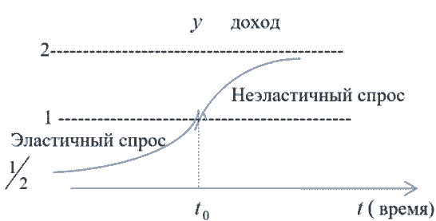

Руководитель: Дегтярев В. С., доцент
кафедра высшей математики им. В.В.Пака,
ГОУ ВПО «Донецкий национальный университет», г.Донецк
e-mail:degtyariov_vs@mail.ru
В статье исследуются возможности применения дифференциальных уравнений для моделирования экономических процессов. Рассматриваются различные типы дифференциальных уравнений, применяемых в экономической динамике, и анализируются их практические реализации. Особое внимание уделяется построению математических моделей экономического роста, цикличности развития и устойчивости экономических систем.
дифференциальные уравнения, экономическая динамика, математическое моделирование, экономический рост, устойчивость систем.
Дифференциальные уравнения имеют широкое применение в моделях экономической динамики, которые отражают не только зависимость переменных от времени, но и их взаимосвязь.
Рассмотрим некоторые задачи макроэкономической динамики.
Задача. Пусть y(t) – объем продукции некоторой отрасли, произведенной к моменту времени t. Будем полагать, что вся производимая отраслью продукция реализуется по некоторой постоянной цене p, т.е. выполнено условие ненасыщаемости рынка. Тогда прибыль к моменту времени t составит Y(t) = py(t).
Обозначим через I(t) величину инвестиций, направленных на расширение производства. В модели естественного роста полагают, что скорость выпуска продукции (акселерация) пропорциональна величине инвестиций, т.е.
y′(t) = Il(t). (1)
(Пренебрежем временем между окончанием производства продукции и ее реализацией, т.е. инвестиционный лаг равен нулю.)
Предполагая, что количество инвестиций I(t) составляет фиксированную часть дохода, получим
I(t) = mY(t) = mpy(t), (2)
где коэффициент пропорциональности m (норма инвестиций) – постоянная величина, 0 < m < 1.
Подставляя последнее выражение (2) для I(t) в (1), приходим к уравнению
y′ = ky (3)
где k = mpl.
Полученное дифференциальное уравнение – с разделяющимися переменными. Решая его, получим
y(t) = y0ek(t-t0), где y0 = y(t0).
Заметим, что уравнение (3) описывает также рост народонаселения, динамику роста цен при постоянной инфляции, процесс радиоактивного распада и др.
На практике условие насыщаемости рынка может быть принято только для узкого временного интервала. В общем случае кривая спроса, т.е. зависимость цены p реализованной продукции от ее объема у является убывающей функцией p = p(y) (с увеличением объема продукции ее цена уменьшается в результате насыщения рынка). Поэтому модель роста в условиях конкурентного рынка примет вид
y′ = mlp(y)y, (4)
оставаясь по-прежнему уравнением с разделяющимися переменными.
Так как все множители в правой части уравнения (4) положительны, то y′ > 0, и это уравнение описывает возрастающую функцию y(t). При исследовании функции y(t) на выпуклость, используется понятие эластичности функции. Из (4) следует, что
y′′ = mly(dp⁄dy y + p).
Эластичность спроса определяется формулой Ep(y) = p⁄y dy⁄dp. Тогда выражение для y′′ можно записать в виде y′′ = mlyp(1 + 1⁄Ep(y)) и условие y′′ = 0 равносильно равенству Ep(y) = –1.
Таким образом, если спрос эластичен, т.е. |Ep(y)| > 1 или Ep(y) < –1, то y′′ > 0 и функция y(t) выпукла вниз; если спрос не эластичен, т.е. |Ep(y)| < 1 или –1 < Ep(y) < 0, то y′′ < 0 и функция y(t) выпукла вверх.
Пример. Найти выражение для объема реализованной продукции y = y(t), если известно, что кривая спроса p(y) задается уравнением p(y) = 2 – y, норма акселерации 1/l = 2, норма инвестиций m = 0,5, y(0) = 0,5 [1].
Решение.
Уравнение (4) примет вид y′ = (2 – y)y или dy⁄(2-y)y = dt.
Решив это уравнение с разделенными переменными, получаем
ln | y - 2⁄y | = –2t + C1
Отсюда
y - 2⁄y = Ce–2t, (5)
где C = ± eC1.
Учитывая, что y(0) = 0.5, C = –3. Выражая y из (5), имеем
y = 2⁄1 + 3e–2t.
График функции схематично изображен на рис. 1.
В этом случае эластичность спроса задается функцией
Ep(y) = y - 2⁄y

Условие Ep(y) = p⁄y dy⁄dp = y - 2⁄y, определяющее положение точки перегиба на кривой, дает y = 1.
Кривая, которая изображена на рис. 1, называется логистической.
Подобные кривые описывают процесс распространения информации, динамику эпидемий, процесс размножения бактерий в ограниченной среде и др.
1. Кремер Н. Ш., Путко Б.А., Тришин И. М., Фридман М. Н. Высшая математика для экономиков второе издание/ Крамер Н. Ш., Путко Б.А., Тришин И. М., Фридман М. Н. – Москва. –470с.
2. Луканкин Г.Л., Луканкин А.Г. Высшая математика для экономистов. Курс лекций. Изд-во «Экзамен», 2006-285с.
3. Улитин Г.М. Курс лекций по высшей математике [Электронный ресурс] : учебное пособие для студентов всех специальностей. В 2-х ч. / Г. М. Улитин, А. Н. Гончаров ; Г.М. Улитин, А.Н. Гончаров ; ГВУЗ «ДонНТУ». – 3-е изд. – (1715Кб). – Донецк: ДонНТУ, 2013.